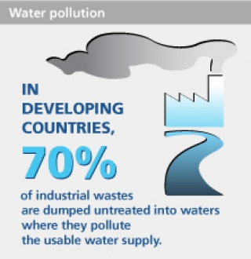
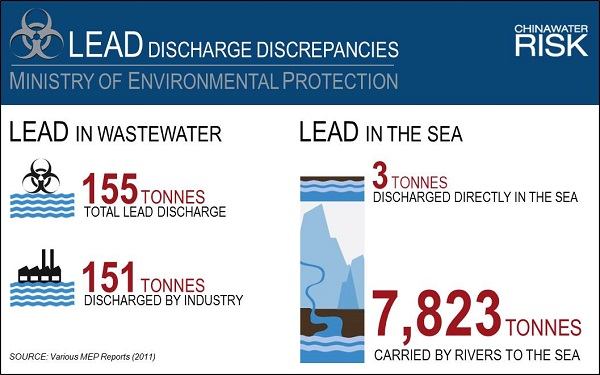
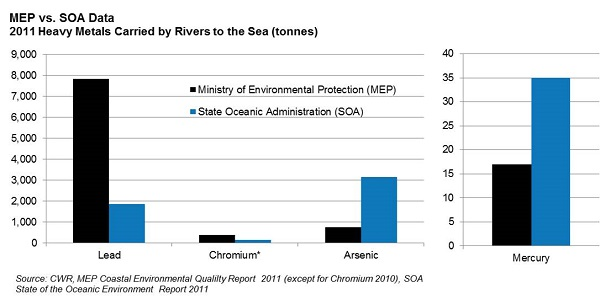

Worldwide Industrial pollution:
 In developing countries, 70 percent of industrial waste is dumped (around 300-400 metric tons of waste) untreated into waters where they pollute the usable water supply.

Up to 90 % of wastewater in developing countries flows untreated into rivers, lakes and highly productive coastal zones, threatening health, food security and access to safe drinking and bathing water
Over 80 % of wastewater worldwide is not collected or treated, and urban settlements are the main source of pollution.
Facts on Industrial water consumption in 2005: